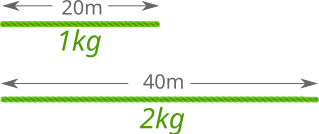
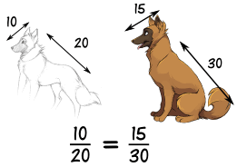
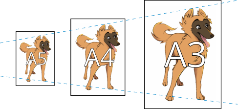
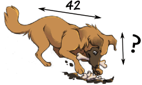
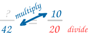
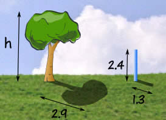
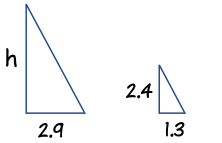

Proportions
Proportion says two ratios (or fractions) are equal in value.
Example:
We see that 1-out-of-3 is equal to 2-out-of-6
The ratios are the same, so they are in proportion.
Example: Rope
A rope's length and weight are in proportion.
When 20m of rope weighs 1kg, then:
- 40m of that rope weighs 2kg
- 200m of that rope weighs 10kg
- and so on

So:
201 = 402
Sizes

When shapes are "in proportion" their relative sizes are the same.
Here we see that the ratios of head length to body length are the same in both drawings.
So they are proportional.
Making the head too long or short would look bad!
Example: International paper sizes (like A3, A4, A5, and so on) all have the same proportions:

So any artwork or document can be resized to fit on any sheet. Very neat.
Working With Proportions
NOW, how do we use this?
Example: you want to draw the dog's head ... how long should it be?

Let's write the proportion with the help of the 10/20 ratio from above:
?42 = 1020
Now we solve it using a special method:

Multiply across the known corners,
then divide by the third number
And we get this:
? = (42 × 10) / 20
= 420 / 20
= 21
So you should draw the head 21 long.
Using Proportions to Solve Percents
A percent is actually a ratio! Saying "25%" is actually saying "25 per 100":
25% = 25100
We can use proportions to solve questions involving percents.
The trick is to put what we know into this form:
PartWhole = Percent100
Example: what's 25% of 160 ?
The percent is 25, the whole is 160, and we want to find the "part":
Part160 = 25100
Multiply across the known corners, then divide by the third number:
Part = (160 × 25) / 100
= 4000 / 100
= 40
Answer: 25% of 160 is 40.
Note: we could have also solved this by doing the divide first, like this:
Part = 160 × (25 / 100)
= 160 × 0.25
= 40
Either method works fine.
We can also find a Percent:
Example: what's $12 as a percent of $80 ?
Fill in what we know:
$12$80 = Percent100
Multiply across the known corners, then divide by the third number. This time the known corners are top left and bottom right:
Percent = ($12 × 100) / $80
= 1200 / 80
= 15%
Answer: $12 is 15% of $80
Or find the Whole:
Example: The sale price of a phone was $150, which was only 80% of normal price. What was the normal price?
Fill in what we know:
$150Whole = 80100
Multiply across the known corners, then divide by the third number:
Whole = ($150 × 100) / 80
= 15000 / 80
= 187.50
Answer: the phone's normal price was $187.50
Using Proportions to Solve Triangles
We can use proportions to solve similar triangles.
Example: How tall is the Tree?
Sam tried using a ladder, tape measure, ropes and various other things, but still couldn't work out how tall the tree was.

But then Sam has a clever idea ... similar triangles!
Sam measures a stick and its shadow (in meters), and also the shadow of the tree, and this is what he gets:

Now Sam makes a sketch of the triangles, and writes down the "Height to Length" ratio for both triangles:
Height:Shadow Length: h2.9 m = 2.4 m1.3 m
Multiply across the known corners, then divide by the third number:
h = (2.9 × 2.4) / 1.3
= 6.96 / 1.3
= 5.4 m (to nearest 0.1)
Answer: the tree is 5.4 m tall.
And he didn't even need a ladder!
The "Height" could have been at the bottom, so long as it was on the bottom for BOTH ratios, like this:
Let's try the ratio of "Shadow Length to Height":
Shadow Length:Height: 2.9 mh = 1.3 m2.4 m
Multiply across the known corners, then divide by the third number:
h = (2.9 × 2.4) / 1.3
= 6.96 / 1.3
= 5.4 m (to nearest 0.1)
It is the same calculation as before.
A "Concrete" Example
Ratios can have more than two numbers!
For example concrete is made by mixing cement, sand, stones and water.
A typical mix of cement, sand and stones is written as a ratio, such as 1:2:6.
We can multiply all values by the same amount and still have the same ratio.
10:20:60 is the same as 1:2:6
So when we use 10 buckets of cement, we should use 20 of sand and 60 of stones.
Example: you have just put 12 buckets of stones into a mixer, how much cement and how much sand should you add to make a 1:2:6 mix?
Let's lay it out in a table to make it clearer:
| Cement | Sand | Stones | |
|---|---|---|---|
| Ratio Needed: | 1 | 2 | 6 |
| You Have: | 12 |
You have 12 buckets of stones but the ratio says 6.
That's OK, you simply have twice as many stones as the number in the ratio ... so you need twice as much of everything to keep the ratio.
Here's the solution:
| Cement | Sand | Stones | |
|---|---|---|---|
| Ratio Needed: | 1 | 2 | 6 |
| You Have: | 2 | 4 | 12 |
And the ratio 2:4:12 is the same as 1:2:6 (because they show the same relative sizes)
So the answer is: add 2 buckets of Cement and 4 buckets of Sand. (You will also need water and a lot of stirring....)
Why are they the same ratio? Well, the 1:2:6 ratio says to have:
- twice as much Sand as Cement (1:2:6)
- 6 times as much Stones as Cement (1:2:6)
In our mix we have:
- twice as much Sand as Cement (2:4:12)
- 6 times as much Stones as Cement (2:4:12)
So it should be just right!
That's the good thing about ratios. You can make the amounts bigger or smaller and so long as the relative sizes are the same then the ratio is the same.